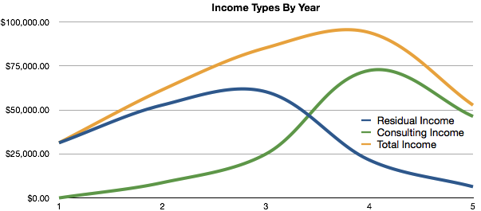

Way back on November 25th, 2008 I left my 9-5 job as a Statistical Programmer to see if I could make it as an indie software developer.
Over the past almost six years I've had some incredible experiences and I've done things I never thought was possible in a million years.
I've published books, traveled all over the world to teach and ran an indie software business. But, like many things my business has reached the end of it's lifecycle.
Yesterday, I closed down my business completely.
Mobile App Mastery, also known as App Shop LLC, has officially ended operations. While this may appear sudden to some of you, it really something that has been slowing unfolding over the past year. As you can imagine, I've learned many lessons over the past 6 years and I'll be writing about what I learned here in my personal blog.
Why End Now?
Mobile App Mastery has experienced dramatic crises in the past, but I've always pivoted to push past each crisis. When paid mobile apps proved to not work well enough I moved to training. When organic traffic stopped after two major Google slap downs I moved to paid advertising and finally when product revenue proved to be inadequate I added consulting to my business.
Still, I knew it would be hard so why end now? Here are the major reasons.
Inadequate Residual Income
For me, the purpose of starting a business was to create assets like apps and books that would reliably generate a passive income month after month. In the first few years, this was what I accomplished. However, even after creating assets that could generate some income I still found that I needed to do consulting to really pay my bills.
By the middle of the third year, the most significant portion of my income came from consulting. See this chart for what I'm talking about:

In the chart above, you can see the first dramatic crisis that hit Mobile App Mastery. In between years 3 and 4, Google changed their search algorithms. Web traffic to my site dropped from 4000+ visits per day to less than 500 visits per day. This basically cost me $25,000 (I had no idea how much that traffic was worth).
I was lucky to have two major consulting clients that gave me enough work to take the edge out of that Google slap. However, I was in a terrible position of being dependent on a small number of consulting clients in a very uncertain market.
The bottom line was that my income never reached the level I knew I could get in a 9-5 and that income depended almost completely on consulting. Basically, it's just not worth it from a purely financial perspective.
The Reality of the App Store
In 2008, you could write an app and have a chance at getting some real traction. In those early days, I made a grand total of 12 apps. Four of those apps were "base hits", they all got a few sales each day and overall earned a significant amount of revenue each month. Two of my apps, "House Hunter" and "Pocket Santa", were featured on the App Store and had tons of downloads.
As early as 2010, my business moved away from the actually building apps because apps would not pay the bills by themselves. In 2014, the situation is much more difficult and recently developers have become disillusioned by the reality of the App Store.
For me, the bottom line is that simply early money by writing apps doesn't work. Not for me and not for most of the people that make up the market for my iOS training business.
So What Now?
I am getting back to focusing on the work: that means technology and programming. I'll be blogging about the technology (including Big Data and web technology) that I'm using in my new job doing data visualization.
As for mobile: I do have an Apress book coming out in the fall about Swift programming and I may return to the App Store at some point the future. However, it's likely I will do this purely as a developer and probably as a hobby.
As for entrepreneurship: I plan on bringing this attitude to my new job and I'll be looking for ways to add unique value. At some point, I may be open to new ventures but I want to take the longer view on my projects.
All this being said, I'm happy that I spent these past few years on my own business and I'm also happy I get to start over in this new job.
comments powered by Disqus